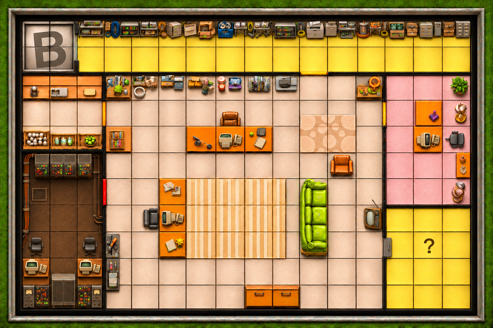
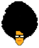
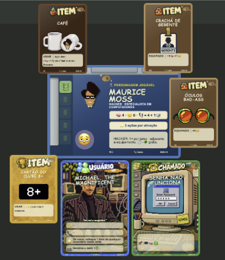

Como ser um bom técnico de TI da Reynholm Industries
Não deixe o Stress subir demais! Se isso acontecer, a equipe de TI será demitida e o porão ganhará um uso mais útil: um banheiro bem grande.
Comece pela mesa
1. Identifique o jogo base

O tabuleiro do Porão é o cenário padrão. Missões podem reservar salas ou posições específicas quando necessário.
Abra uma mesa grande e coloque o tabuleiro do Porão no centro. Deixe espaço abaixo para a fila de iniciativa e para as cartelas dos personagens.
Use o tabuleiro com o elevador marcado com B. Esse é o cenário do jogo base.
Deixe a régua The Boss Stress à esquerda e coloque a seta no 0.
Confira o marcador 📍B. Ele aparece no canto superior direito das cartas e identifica os componentes do jogo base.
Escolha qualquer mesa com cadeira. Isso inclui a sala do gerente à direita; uma missão pode reservar ou limitar esse espaço quando necessário.
Regra de ouro: se uma missão trouxer uma preparação própria, a instrução da missão tem prioridade sobre este setup.
2. Escolha os personagens
Escolham de 1 a 4 personagens jogáveis. Cada jogador escolhe qualquer escritório com cadeira no mapa.
Roy🧠3 · 🙂2 · 👣 = 3 + 2🎲

Moss🧠4 · 🙂0 · 👣 = 4 + 1🎲
Jen🧠0 · 🙂3 · 👣 = 3 + 1🎲
Richmond🧠2 · 🙂1 · 👣 = 4 + 2🎲
Coloque a cartela e a ficha de cada personagem na área dos jogadores.
Coloque o peão na cadeira escolhida como escritório. Essa escolha define apenas a posição inicial do personagem; ela não limita o computador ou telefone que ele pode usar.
Coloque um tile de computador funcional no escritório escolhido. O computador escolhido serve apenas para marcar a posição inicial; qualquer personagem pode usar qualquer computador.
Separe um telefone por personagem jogável. Telefones livres ficam fora do cenário; coloque um tile de telefone na mesa somente quando o ramal estiver tocando ou em atendimento.
Peças na mesa
Exemplo de posicionamento padrão
Exemplo de posicionamento padrão no playtest: o tabuleiro fica no centro, os itens disponíveis ficam agrupados ao lado e as cartelas permanecem abaixo. As cadeiras continuam sendo escolhidas pelos jogadores; o print serve como referência visual da organização física da mesa.
3. Prepare o cenário
Use o lado funcional dos tiles. Os marcadores que não forem usados imediatamente ficam separados ao alcance de todos.
🖥️ComputadoresColoque 1 computador funcional no escritório de cada personagem.
🗄️ServidorColoque o servidor no lado funcional na sala de servidores.
🧰ArmárioColoque o tile do armário disponível na faixa inferior do mapa.
☕CozinhaEmpilhe as cartas de consumíveis viradas para cima perto da cozinha.
🔋 💬MarcadoresDeixe Cansaço, Ânimo e Distração em uma reserva comum.
🔥Fogo e monitoresDeixe fichas de fogo e monitores quebrados separados; missões podem colocá-los no cenário.
Telefones: use exatamente 1 ramal por personagem jogável para limitar a pressão. O tile de um telefone livre não fica sobre a mesa.
O que fica fora do cenário no início
Tiles de telefone livres, bombeiros e personagens especiais não entram no mapa por padrão. Chamados e Usuários são representados pelas cartas ☎️ + 👤; personagens especiais só entram quando uma missão ou carta mandar.
4. Monte os baralhos
Confira o marcador 📍B e prepare os baralhos do jogo base:
Chamadosembaralhe
Usuáriosembaralhe
Eventosembaralhe
Missõesmantenha a ordem
🏆 Colecionáveisembaralhe
Chamados, Usuários e Eventos: embaralhe cada baralho separadamente.
Missões: Caso escolha uma missão com vários atos mantenha as cartas em ordem numérica e deixe a primeira missão no topo.
Colecionáveis 🏆: embaralhe e deixe virado para baixo, fora do alcance de compra normal.
Cartas de referência: deixe Rotina, Ações e Ânimo abertas para consulta.
A fila decide a rodada
5. Monte a fila de iniciativa
A fila é lida da esquerda para a direita. Ela organiza quando a Rotina, os Eventos, os personagens e a Missão serão ativados.
Rotina→Eventos→Roy→Moss→Yesterday’s Jam · Ato 1
⭐ A estrela fica sobre a carta atual. Ela lembra qual carta está sendo resolvida no momento. Depois de concluir a ativação, avance a estrela para a próxima carta da fila.
O espaço de Eventos representa o baralho; a carta visível é apenas uma referência visual.
Coloque a carta Rotina no início. A estrela começa sobre ela.
Coloque o baralho de Eventos logo depois da Rotina.
Coloque as cartas de iniciativa dos personagens escolhidos na ordem combinada pelos jogadores.
Coloque o baralho de Missões por último. A primeira missão será revelada conforme a regra da partida.
Deixe espaço à direita para cartas que entrarem na fila durante o jogo.
Fim da fila: quando a ⭐ chegar à última carta, avance-a novamente para a primeira carta da fila. A Rotina volta a ser resolvida no início da nova rodada.
Preparação inicial: a primeira ativação serve para os jogadores se organizarem. Antes de começar a resolver a pressão, confira se todos sabem qual é seu escritório, onde estão os computadores e onde ficam as cartas de referência.
6. Checklist antes de começar
Tabuleiro do Porão montado
Régua em ⚠️ 0
1 escritório escolhido por jogador
Computadores funcionais posicionados
Telefones excedentes fora do cenário
Chamados, Usuários e Eventos embaralhados
Missões em ordem
Rotina, Ações e Ânimo disponíveis
Dados separados
Tokens ao alcance dos jogadores
Agora a mesa está pronta e a primeira Rotina foi resolvida. Continue a rodada avançando a estrela pela fila e consulte as seções correspondentes deste manual quando surgir uma exceção.
A carta Rotina é resolvida no início de cada rodada, antes de a estrela avançar.
Quando a ⭐ chegar ao espaço de Eventos, se ainda não houver um evento exposto, revele a carta do topo. Em seguida, leia os símbolos da carta e execute o efeito indicado.
☎️⚡ Telefones tocandoRole 🔺 para cada telefone tocando: 1–6 não faz nada; 7–8 aumenta ⚠️ e mantém o telefone tocando; 9–10 aumenta ⚠️ e coloca o conjunto ☎️ + 👤 no fim da fila.
📞 Atendimentos em andamentoPara cada combinação ☎️ + 👤 que ainda estiver na mão de um jogador, resolva a linha 📞 da carta de Usuário.
📞📞 Todos os telefones ocupadosFaça 🎲 ✅. Com sucesso, aumente ⚠️ em 1.
⚠️ Pressão acumuladaSe ⚠️ for igual ou menor que a quantidade de personagens jogáveis, coloque mais um ☎️⚡.
🗄️🦠 Servidor infectadoSe o servidor estiver infectado, role 🔺: 6–8 aumenta ⚠️, 9–10 aumenta ⚠️ e espalha o vírus para um 🖥️ a escolha dos jogadores.
🔥 IncêndiosPara cada fogo, faça 🎲 ✅ e aplique a regra de alastramento explicada na subseção abaixo.
Carta de iniciativa do Bombeiro.
Regras de fogo e bombeiros
Depois de resolver os demais efeitos da Rotina, faça a etapa do fogo. Para cada ficha de 🔥, role 🎲 ✅. Se obtiver sucesso, o fogo se espalha:
Fogo baixo vira fogo alto.
Fogo alto cria 1 fogo baixo em um tile adjacente livre e atravessável.
Se não houver um tile válido, nenhum fogo novo é colocado.
O fogo não bloqueia a passagem, mas atravessá-lo causa +. Ninguém pode terminar o movimento ou a ativação sobre fogo. O Bombeiro atravessa fogo sem penalidade, mas também não pode terminar sobre ele.
Quando um Bombeiro apagar um fogo coberto por um monitor quebrado, remova primeiro o monitor para revelar a ficha. Apagar significa remover a ficha, seja ela fogo baixo ou alto.
Como chamar os Bombeiros: o custo e o teste para chamar os Bombeiros estão explicados na carta de Ações, na seção “Consulte a carta de Ações”.
Terminou a Rotina? Avance a ⭐ uma posição para a direita. Resolva a carta que agora está sob a estrela e repita esse movimento ao final de cada ativação.
Cartas que mudam a rodada
8. Resolva um evento
E4 — Solicitação Urgente da Diretoria.
Quando a ⭐ chegar ao espaço de Eventos, revele a carta do topo se ainda não houver um evento exposto. Em seguida, leia os símbolos da carta e execute o efeito indicado.
Resolva o ⚡ primeiro. A carta do lado manda colocar a carta no fim da fila de iniciativa. Ela deixa de ser resolvida no espaço de Eventos e passa a ocupar uma posição própria na fila.
Conclua os objetivos em ordem. Primeiro, um personagem gasta 1⏱️ e faz 🖥️ 🧠 ✅✅ para preparar o relatório. Só depois outro personagem pode gastar 1⏱️ e fazer 🖥️ 🙂 ✅ para enviá-lo. (🖥️ 🧠 ✅✅ - em um computador não contaminado, role um teste de inteligencia e consiga 2 sucessos)
Quando a ⭐ chegar à carta de evento ao lado, resolva o ⭐. Nesse exemplo, aumente ⚠️ (stress) em 1. A carta permanece na fila enquanto os objetivos ainda não tiverem sido concluídos.
Procure o descarte. Quando o segundo objetivo for concluído, o 🗑️ manda retirar E4 da fila.
Depois do efeito imediato, o evento E4 aparece no fim da fila de iniciativa.
Outro exemplo: E16 — Marketing Meio Ocupado. Depois de resolvido o efeito ⚡, a carta fica por cima do baralho de Eventos. Enquanto ela estiver exposta, não revele uma nova carta. A cada ativação ⭐, role 🔺 (d10); com resultado 1–5, descarte E16. Até isso acontecer, o evento continua sendo o evento ativo.
Regra prática: um evento só é revelado quando a estrela chega ao espaço de Eventos sem outra carta ativa ali. Não revele uma nova carta enquanto o evento atual continuar exposto. Quando o próprio evento entrar na fila, siga a ordem das linhas e dos objetivos impressos nele.
Agora é a vez da equipe
9. Ative um personagem
Quando a ⭐ chegar à carta de iniciativa de um personagem, resolva a ativação dele. A carta mostra os atributos, a quantidade de ações e a habilidade especial. A cartela guarda o estado físico e os itens daquele personagem.
Cartela: guarda atributos, Cansaço, Ânimo, inventário e equipamentos.Iniciativa: fica na fila e informa quando Moss ativa, além de mostrar seus atributos e habilidade.Peão: mostra onde o personagem está no tabuleiro.
Cartela vazia: os espaços ficam disponíveis para marcadores, inventário e equipamentos.

Cartela em uso: os itens ficam encaixados nos espaços correspondentes e as cartas de atendimento podem ficar próximas do personagem.
Leia os atributos.🧠 é Inteligência, 🙂 é Carisma e 👣 é o movimento por ação. A fórmula de 👣 combina um movimento base com os sucessos dos dados indicados.
Confira as ações. A linha ⭐ 3 ações significa que o personagem pode gastar até três ⏱️ na ativação, conforme os custos das cartas e das regras.
Use os espaços de 🔋. Eles armazenam Ânimo e comportam até 5 marcadores. Os demais marcadores, como , ficam sobre a cartela conforme forem recebidos.
Preencha o inventário. Os espaços acima da cartela são o inventário: cada personagem pode carregar até 3 itens; Richmond pode carregar até 4. Um item no inventário é apenas carregado e não produz seu efeito de equipamento.
Equipe os itens. Os dois espaços nas laterais da cartela são os encaixes de equipamento. Equipar ou desequipar custa 1⏱️. O efeito de um item equipado fica ativo; um item no inventário não produz o efeito de equipamento.
Habilidades dos personagens
Personagem
Habilidade
Roy
MOTIVADO: ao concluir um Chamado, recebe +🔋.
Moss
HACKER: 1× por turno, estando adjacente a um equipamento, pode gastar ⏱️ para remover 🦠 sem rolar.
Richmond
CONFORMADO: 1× por turno, remove 1 de si sem custo.
Jen
LIDERANÇA: Jen pode ceder 🔋 a outro personagem para usar em um Chamado que esteja na mão. Qualquer chamado que seja concluído, Jen recebe +🔋.
Como resolver checks e testes
O símbolo do atributo indica qual conjunto de dados usar. Por exemplo, 🧠 ✅✅ pede um teste de Inteligência com dois sucessos; um personagem com 🧠3 rola 3 dados. Um atributo em 0 não gera dados e não pode produzir sucessos, salvo exceção escrita na carta ou efeito de equipamento.
🎲 d6 customizado: 1 = ❌🔒 · 2–4 = ❌ · 5 = ✅ · 6 = ✅🔒. O cadeado bloqueia o resultado, seja falha ou sucesso.
Teste combinado:🧠 + 🙂 = ✅✅ significa somar os dados de Inteligência e Carisma e contar 2 sucessos no total. Testes separados:🧠✅, 🙂✅ significa conseguir 1 sucesso em cada atributo; um sucesso de 🧠 não substitui o sucesso exigido de 🙂.
Role o atributo indicado. Role uma quantidade de 🎲 igual ao valor de 🧠 ou 🙂 do personagem.
Conte os ✅. Repita o símbolo para mostrar quantos sucessos são exigidos. Os sucessos podem ser acumulados durante a mesma ativação.
Rerrole, se quiser. Depois da rolagem, gaste ⏱️1 para escolher qualquer quantidade de dados não bloqueados de um personagem. Dados com 🔒 não podem ser escolhidos.
Tente novamente ou rerrole. Tentar novamente paga o custo normal e começa um teste novo, com o pool inteiro e sem os sucessos anteriores. Rerrolar custa apenas ⏱️1 adicional e mantém os sucessos acumulados da ativação.
Finalize a ativação. Se o teste não for concluído até o fim da ativação, descarte o progresso parcial. A próxima ativação começa do zero, salvo se a regra disser o contrário.
Em um confronto como 🧠 vs 🙂 da Jen, cada lado rola seu próprio pool e vence quem obtiver mais sucessos, nesse caso seria 🧠Inteligência do personagem vs 🙂Carisma da Jen.
Quando aparecer 🔺, use o d10 (dado de 10 faces) e leia a faixa numérica indicada; ele não gera sucessos.
Durante a ativação: escolha uma ação, pague o custo indicado, resolva o teste ou efeito e só então passe à próxima ação. Quando terminar ou gastar todas as ações, avance a ⭐ para a próxima carta da fila.
Consulte a carta de Ações
A carta de Ações fica aberta ao alcance de todos.
A carta de Ações resume o que um personagem pode fazer durante sua ativação. Sempre que uma ação tiver custo, gaste ⏱️1; efeitos que disserem “grátis” não consomem uma ação.
Mover: gaste 1⏱️ e use o valor de 👣 do personagem. Some 1 tile para cada ✅ obtido nos dados de movimento. O caminho é ortogonal; diagonal conta apenas para adjacência, não para movimento.
Remover : gaste ⏱️1 para remover um Cansaço de si ou de um aliado adjacente.
Gerar 🔋: 1× por turno, gaste ⏱️1 para gerar 1 Ânimo para si, até o limite de 5.
Desinfectar: junto a um equipamento, gaste ⏱️1 e faça o teste indicado: 🖥️ 🧠 ✅✅ para computador ou 🗄️ 🧠 ✅✅✅ para servidor.
Chamar os Bombeiros: junto a um computador funcional 🖥️, gaste ⏱️1 e faça o teste combinado 🙂 + 🧠 = ✅✅. Com sucesso, coloque os 2 Bombeiros no elevador e a carta de iniciativa do Bombeiro no fim da fila.
Atender ou postergar: junto a um telefone tocando, gaste ⏱️1 para comprar o Chamado e o Usuário. Para postergar um atendimento, gaste ⏱️1, remova o tile de telefone e coloque o conjunto na fila.
Use a carta como referência: se uma ação, custo ou exceção estiver impresso nela, siga o texto da carta. As regras completas de movimento, testes e atendimento ficam no manual.
Consulte a carta de Ânimo
A carta de Ânimo mostra os custos e efeitos disponíveis.
Ânimo é o recurso representado por 🔋. Ele fica nos espaços da cartela do personagem e pode ser gasto conforme a carta de Ânimo. Para pagar um custo, retire da cartela a quantidade indicada de marcadores e devolva-os à reserva comum; depois aplique o efeito.
1🔋: receba +1👣, +1🙂 ou +1🧠 durante uma ação, conforme a opção escolhida.
1🔋: altere em 1 o resultado de um 🔺.
2🔋: receba +⏱️.
2🔋: adicione +1🎲 a uma rolagem.
Limite: cada personagem pode guardar no máximo 5🔋.
Interrupção: Ânimo pode ser gasto a qualquer momento, inclusive durante o turno de outro jogador ou antes de um evento ou missão resolver. Use-o quando a situação exigir uma resposta imediata.
Atravessando o escritório
10. Mova um personagem
Mover custa 1⏱️. Em cada ação de movimento, use o valor de 👣 mostrado na carta de iniciativa do personagem.
Exemplo: Richard tem 👣 = 4 + 2🎲. role 2 dados e acrescente 1 tile para cada ✅ obtido, Richard pode mover-se no total até 6 tiles se obtiver 2✅.
Conte os tiles. Cada tile atravessado vale 1 movimento. O caminho precisa seguir tiles conectados; paredes e móveis bloqueadores não podem ser atravessados.
Mova em linha ortogonal. O movimento só pode seguir para cima, baixo, esquerda ou direita. Não é permitido andar na diagonal.
Não termine ocupado. O personagem não pode terminar o movimento no mesmo tile que outro personagem, um bloqueio ou fogo.
Atravesse o fogo com cuidado. Passar por um tile com 🔥 causa +. O Bombeiro ignora essa penalidade, mas também não pode terminar o movimento sobre o fogo.
Adjacência é diferente de movimento: dois tiles também são adjacentes quando se tocam na diagonal, mas personagens continuam proibidos de se mover diagonalmente.
Recursos do escritório
11. Pegue e use itens
Itens ficam disponíveis no cenário para preparar os personagens antes e durante a partida. Consumíveis e Equipamentos seguem esta sequência simples:
Pegue um Consumível na Cozinha. Entre na Cozinha e gaste 1⏱️ para escolher uma carta disponível da pilha virada para cima. Para consumir, siga a carta: quando ela disser Ação livre, não gaste outra ⏱️; depois, remova o Consumível do jogo.
☕ ITEM: estes são Consumíveis da Cozinha. Basta entrar na área da Cozinha e gastar 1⏱️ para pegar uma carta disponível.
Compre um Equipamento no Armário. Estando junto ao tile 🧰 SUP, gaste 1⏱️ para escolher uma carta disponível. O Equipamento pode ser colocado diretamente em um encaixe de Equipado nessa mesma ⏱️ ou guardado no Inventário.
🧰SUP
🧰 SUP: para comprar um Equipamento, esteja adjacente ao Armário e gaste 1⏱️. As cartas abaixo são exemplos de itens Equipáveis.
Separe Inventário e Equipado. Os espaços acima da cartela são o Inventário: até 3 Itens, ou 4 para Richmond. Os dois encaixes laterais são para Equipamentos; seus efeitos só funcionam quando a carta está equipada.
Equipe ou desequipe. Colocar ou retirar um Equipamento custa 1⏱️. Em uma única ação, é permitido desequipar um item e equipar outro imediatamente, desde que um item saia e outro entre como substituição. Um personagem pode ter até dois Equipamentos equipados, respeitando o limite de um Equipamento de cada tipo. Equipar o item recém-comprado na mesma ⏱️ de compra é permitido.
Guarde os Colecionáveis 🏆. Eles não ocupam o Inventário nem precisam ser carregados no cenário: ao adquirir um, deixe-o na Coleção, ao lado da cartela. Se a carta disser EQUIPADO, ela usa um encaixe lateral e o efeito de Equipamento precisa ser ativado normalmente e também gasta-se uma ⏱️ para equipar.
Troque entre personagens. Um personagem técnico adjacente a outro personagem pode gastar 1⏱️ para trocar 1 Item com o outro personagem: cada um pode entregar 1 Item nessa mesma ⏱️. Se o personagem que gastou a ⏱️ receber um Equipamento, já pode equipá-lo sem custo adicional. A diagonal conta como adjacência.
Resumo: Consumíveis vêm da Cozinha; Equipamentos vêm do Armário; Inventário é o que o personagem carrega; Equipado é o que está ativo. Itens 🏆colecionaveis se consegue em situações especiais.
Do telefone para a mesa
12. Atenda um chamado
Quando um telefone estiver tocando, um personagem pode decidir atender o usuário e descobrir o problema. A partir desse momento, o Chamado e o Usuário ficam associados até o atendimento terminar.
Chamado: define o problema, os testes e como concluir o atendimento.Usuário: define os efeitos enquanto está na mão ou na fila.
Ramal do TI: cada mesa de jogador definida no setup, com um computador, também representa um telefone ativo. Quando uma chamada surgir, coloque o tile ☎️⚡ perto de qualquer computador ativo do porão; ele serve apenas como marcador e não define onde o atendimento precisa acontecer.
Escolha uma mesa com computador. O personagem deve estar em qualquer mesa de jogador com computador; não precisa estar junto ao tile ☎️⚡. Gaste 1⏱️.
Coloque o ramal Em atendimento. Mova o tile para a mesa escolhida e vire-o para o lado 📞. Compre 1 carta de ☎️Chamado e 1 carta de 👤Usuário. Mantenha as duas juntas.
Escolha como agir. Enquanto o conjunto estiver na mão, o personagem responsável não pode se movimentar.
Resolva na mão usando os custos e testes do Chamado. A linha 📞 do Usuário é resolvida pela Rotina enquanto o conjunto continuar na mão.
Postergue se necessário. Gaste 1⏱️, remova o tile do telefone e coloque ☎️ + 👤 no fim da fila de iniciativa, com o Chamado por cima. O telefone é desligado.
Puxe para si. Durante sua ativação, gaste 1⏱️ para mover um conjunto da iniciativa ou da mão de outro jogador para a sua própria mão.
Conclua o chamado. Resolva a linha 🏁 do Usuário, depois a conclusão do Chamado, se houver. Remova o tile de telefone da mesa, se ainda estiver no cenário, e descarte as duas cartas juntas.
Chamado postergado: ele pode continuar na fila ou ser recuperado pelas regras acima. Para saber como continuar a resolução quando o conjunto estiver na fila, consulte Resolver um chamado na fila.
O objetivo maior da partida
13. Resolva uma missão
Escolham a missão antes do setup. Ela funciona como a “fase” que será jogada e define a preparação, os andares necessários e o objetivo da partida. A campanha principal usa missões com atos; para uma partida rápida, escolham uma missão individual.
Existem dois formatos: uma missão individual tem uma única carta e um objetivo direto; uma missão com atos conta uma história em etapas, com uma carta para cada ato que deve ser resolvida em sequência.
Missão com atosYesterday’s Jam
1 — Nova gerente 2 — Sinclair ZX81 3 — Quer conectar na Data Matrix?
Missão individualCrise
Uma carta, um objetivo direto sem número de ato
Exemplo: Yesterday’s Jam — Nova gerente.
A missão define a história e as condições especiais da partida. Ela pode alterar o setup, movimentar personagens especiais, criar objetivos e determinar quando a próxima missão será revelada.
Revele a primeira missão. As cartas de missão ficam em ordem quando são de vários atos. Comece pela primeira carta e mantenha as próximas viradas para baixo.
Faça a preparação. A linha com 🛠️ explica o setup: Leia as linhas de preparação e coloque personagens, tiles, marcadores ou cartas exatamente como a missão indicar. Essa preparação acontece antes de começar a resolver os objetivos.
Leia o objetivo. A linha com 🎯 explica o que os jogadores precisam alcançar. O objetivo pode exigir uma ação, uma condição no cenário ou uma sequência de etapas.
Resolva as ativações ⭐. Quando a ⭐ chegar à carta da missão na fila, resolva suas linhas ⭐. Se ela mandar mover um NPC ou verificar uma condição, faça isso nesse momento.
Siga os atos na ordem. Uma missão com vários atos só avança quando a condição do ato atual for concluída. Não pule para o próximo ato; mantenha os estados do cenário, salvo se a própria missão disser para alterá-los.
Descarte e revele a próxima. Quando a condição 🗑️ for cumprida, retire a missão ativa da fila e revele a próxima carta de missão conforme a ordem do baralho.
Prioridade da missão: se uma regra da missão entrar em conflito com uma regra geral, siga a missão. A carta revelada é a referência durante a partida; consulte o manual apenas para os detalhes que a carta não explicar.
Quando a rodada termina
14. Como a partida termina
A partida termina assim que uma condição de vitória ou derrota for cumprida. Confira sempre a carta da missão ativa antes de encerrar o jogo.
Por que o Stress importa? Se a pressão passar do limite, a equipe será demitida e o novo chefe poderá transformar o porão de TI em algo mais útil — tipo um novo banheiro bem grande.
Vitória da missão. Se os jogadores cumprirem o objetivo indicado pela missão, a equipe vence. Em uma missão com atos, isso acontece quando o objetivo do último ato for concluído.
Derrota por Stress. Se ⚠️ The Boss Stress passar de 15, os jogadores perdem: a TI é dispensada e o porão será convertido em um banheiro bem grande.
Exceções da missão. Algumas missões podem definir outra condição de vitória, derrota ou encerramento. Quando isso acontecer, siga o texto da missão; ele tem prioridade sobre a regra geral.
Antes de continuar: não revele uma nova missão depois que a partida já terminou. Resolva apenas a condição que encerrou o jogo e determine o resultado.
Dica: Seja criativo e crie suas próprias missões ou combine mais de uma!
Pendências na iniciativa
15. Resolva um chamado na fila
Na fila, o Chamado fica por cima do Usuário e a ⭐ indica o conjunto atualmente ativado.
Um conjunto ☎️ + 👤 na fila representa um atendimento que foi postergado ou que entrou diretamente pela Rotina. Ele continua disponível para qualquer personagem resolver durante seu próprio turno.
O Chamado fica por cima do Usuário. As duas cartas continuam juntas como um único atendimento enquanto estiverem na fila. A carta de Usuário identifica os efeitos da fila; a carta de Chamado mostra o que precisa ser resolvido.
Resolva a linha ⭐ do Usuário. Quando a ⭐ alcançar o conjunto na fila, aplique o efeito indicado na carta de Usuário ao lado de ⭐.
Recupere ou puxe um chamado. Por 1⏱️, o jogador da vez pode puxar o conjunto para a própria mão, seja da iniciativa ou da mão de outro jogador. Sem fazer isso, qualquer personagem pode gastar suas ações para resolver o Chamado diretamente da fila.
Siga as etapas do Chamado. Leia os objetivos na ordem impressa, pague os custos, faça os testes e acumule sucessos apenas durante a ativação atual.
Se não concluir, mantenha o conjunto na fila. O Chamado continua disponível para a próxima ativação, e a linha ⭐ do Usuário será aplicada novamente quando a estrela voltar ao conjunto.
Ao concluir: resolva a linha 🏁 do Usuário, depois a conclusão do Chamado, se houver, remova o tile de telefone da mesa, se ainda estiver no cenário, e descarte as duas cartas juntas.
Resumo do fluxo: atenda o telefone → resolva na mão ou postergue → deixe o conjunto na fila → aplique ⭐ → resolva o Chamado → aplique 🏁 → descarte o par. Para o primeiro passo, volte à seção Atenda um chamado.
A campanha principal
Yesterday’s Jam
Uma história em cinco atos. A campanha principal acompanha a chegada de Jen ao departamento de TI. Enquanto ela tenta parecer preparada, a equipe precisa improvisar, esconder seus problemas e sobreviver ao caos do expediente. As cartas abaixo devem ser jogadas em ordem; o manual contém as regras completas de cada ato.
F1 · Nova gerente
1 — Nova gerente
Denholm apresenta Jen como a nova gerente. Ela chega ao porão falando de e-mails, mouse e cliques como se estivesse revelando um grande conhecimento técnico. Setup: Jen começa no elevador, pronta para encontrar a equipe. Objetivo: aproximar um técnico e vencer o confronto que revela que há muito mais confiança do que competência naquela apresentação.
F2 · Sinclair ZX81
2 — Sinclair ZX81
Jen está prestes a chegar à sua cadeira e começar a mandar no departamento. Quando ela passa pelo Sinclair ZX81 sem demonstrar o menor interesse, os técnicos começam a achar aquilo suspeito — talvez ela realmente não entenda muito de computadores. Antes disso, eles tentam preparar uma pequena surpresa: infectar o computador e deixar uma falha impossível de ignorar. Setup: Jen continua avançando para a cadeira e o computador permanece funcional. Objetivo: infectar o PC antes que ela chegue; distrações podem comprar o tempo necessário.
F3 · Quer conectar na Data Matrix?
3 — Quer conectar na Data Matrix?
Agora Jen tenta provar que consegue cuidar das coisas sozinha. Ela se mete nos chamados, improvisa respostas e transforma cada tentativa em mais uma oportunidade para a TI parecer incompetente. Setup: Jen fica na cadeira e começa com Credibilidade 3. Objetivo: reduzir essa Credibilidade a 0, enfrentando os confrontos e evitando que as tentativas dela aumentem o Stress da empresa.
F4 · Que screen saver realista!
4 — Que screen saver realista!
Moss está recuperando uma placa de circuito com o ferro de solda. Ele acha que o ferro está ligado e o desliga — mas ele já estava desligado. Durante o expediente, o escritório começa a pegar fogo. Roy percebe as chamas e vê que o Boss Denholm está descendo para o porão; então improvisa, colocando monitores velhos na frente do fogo para fazer parecer que aquilo é apenas uma proteção de tela. Setup: o fogo aparece no armário inferior, Denholm espera no elevador e monitores quebrados são espalhados pelos escritórios. Objetivo: esconder todos os fogos com os monitores antes que Denholm entre na sala principal e perceba o desastre.
F5 · Are you stressed?
5 — Are you stressed?
Denholm percebe que Jen está no meio do caos e começa a pressioná-la com perguntas. Setup: Jen fica em sua cadeira, Denholm começa diante da mesa e os fogos continuam no cenário. Objetivo: chamar os bombeiros por email, apagar todos os fogos e distrair Denholm enquanto Jen tenta sobreviver ao interrogatório. Se o incêndio for controlado antes que o Stress passe do limite, a campanha termina com uma vitória da equipe.
Depois do último ato: aplique a condição de vitória da missão e encerre a partida. Para detalhes de preparação, ativações e exceções, consulte as seções anteriores deste manual.
Última página · consulta rápida
Principais símbolos
Use esta tabela para lembrar o significado dos símbolos mais frequentes durante o setup, a fila e a Rotina. Ela não substitui as regras completas do manual.
Símbolo
Significado rápido
Onde aparece
Fila e resolução de cartas
⭐
Carta atualmente ativada pela estrela.
Fila de iniciativa
⚡
Efeito imediato, resolvido assim que a carta é revelada.
Eventos
🏁
Efeito de conclusão do chamado ou usuário.
Cartas
🗑️
Descarte a carta ou marcador indicado.
Cartas
📍B / 📍1️⃣
Componente do Porão ou do Andar 1 — Marketing.
Cartas e componentes
Dados e testes
🎲
Dado de seis faces para testes de atributo (d6).
Ações e cartas
🔺
Dado de dez faces para tabelas numéricas (d10).
Rotina e cartas
✅
Sucesso.
Resultados de dados
❌
Falha.
Resultados de dados
🔒
Cadeado: o resultado está bloqueado e não pode ser rolado novamente. Pode aparecer sobre uma falha ou um sucesso.
Resultados de 🎲
Personagens e recursos
🧠
Inteligência; usada para problemas técnicos.
Atributos e testes
🙂
Carisma; usado para interações sociais.
Atributos e testes
👣
Movimento por ação.
Personagens
⏱️
Ação disponível.
Turnos e custos
Cansaço.
Personagens
🔋
Ânimo, recurso acumulável.
Cartela dos personagens
⚠️
Stress da empresa.
Régua The Boss Stress
Atendimento e cenário
☎️⚡
Telefone tocando.
Rotina e cenário
☎️ + 👤
Chamado associado a um usuário.
Mão ou fila
📞
Efeito do usuário enquanto o chamado está em atendimento (na mão).
Rotina e carta de Usuário
⏸️
Postergar: desligar o telefone e colocar o chamado na fila.
Ações
🖥️ / 🗄️
Computador / servidor.
Cenário e chamados
🦠
Equipamento infectado.
Tiles e efeitos
🔥
Fogo ativo no cenário.
Tiles e Rotina
Dica: quando um símbolo aparecer combinado com outro, leia-os juntos. Por exemplo, 🖥️🦠 significa “computador infectado” e ☎️ + 👤 significa “chamado e usuário associados”.
 Richmond🧠2 · 🙂1 · 👣 = 4 + 2🎲
Richmond🧠2 · 🙂1 · 👣 = 4 + 2🎲